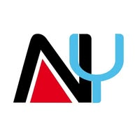

Curriculum Vitae
De Madagascar à la Bretagne, voici les étapes clés de mon développement académique et professionnel.
Spécialisation visée en sécurité des systèmes d'information (Cyberdéfense) et informatique.
Cycle préparatoire intégré. Mathématiques, Informatique, Mécanique.
Voir le site de l'école ↗Mention Très Bien. Spécialités : Mathématiques, NSI (Numérique et Sciences Informatiques), SES.
Voir le site du lycée ↗Accompagnement d'un étudiant en situation de handicap. Synthèse des cours et rigueur administrative.

Refonte graphique du site web (HTML/CSS) et mise à jour sécurisée des bases de données clients.
Voir la page FacebookObservation des flux logistiques et du réseau informatique d'une multinationale. Sensibilisation aux enjeux de l'import-export.